Torna alla pagina di Ricerca Operativa
:: Ricerca Operativa - Algoritmo del simplesso ::
Alcune immagini di questa pagina sono prese dalle slide del prof Giovanni Righini
Forma canonica di un problema di PL
Nella scorsa lezione abbiamo visto cosa sono i problemi di programmazione lineare e abbiamo anticipato che per darli in pasto all'algoritmo del simplesso dobbiamo scriverli in forma canonica. Vediamo come ottenerla a partire dalla forma standard.
| 1
| Forma standard.
Notare che non importa se stiamo minimizzando o massimizzando, la funzione obiettivo è indicata con la notazione generica opt
| 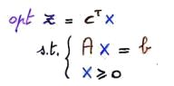
|
| 2
| Scegliamo una base e dividiamo il problema in "parte in base" (indicata in verde) e "parte fuori base" (indicata in rosso). In altre parole dobbiamo dividere la matrice A in due matrici B ed N, e il vettore x in xB e xN.
| 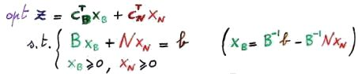
|
| 3
| Moltiplichiamo a sinistra per B-1.
| 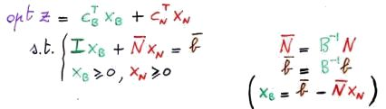
|
| 4
| Sostituiamo tutto in z ottenendo finalmente la forma canonica.
| 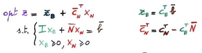
|
A cosa serve tutto questo? A far vedere che una volta azzerate le variabili fuori base xN ottengo che:
z = zB e xB = b (segnato).
Avremo intuito che esistono tante forme canoniche quanti sono i modi in cui posso dividere le variabili di base da quelle fuori base, o analogamente, tante quanto sono le sue basi.
Formalmente, un problema è in forma canonica se e solo se:
- i coefficienti delle xB nel sistema dei vincoli formano una matrice identità
I
- le xB non compaiono nella funzione obiettivo
z
Inoltre si dice che la forma canonica è forte se e solo se i termini noti (b segnato) sono non negativi, altrimenti è detta debole. Quindi se ho una forma canonica forte avrò una serie di soluzioni di base ammissibili, mentre se ho una forma canonica debole saranno non ammissibili.
Algoritmo del simplesso
L' algoritmo del simplesso garantisce l'ottimalità attraverso un processo iterativo di miglioramento che si sposta da un vertice all'altro. Ciò vuol dire che ad ogni iterazione la soluzione o viene lasciata invariata o viene migliorata, e dato che il poliedro è convesso non si può che terminare nella soluzione ottima. Non è polinomiale (nel caso peggiore ha complessità esponenziale), ma nella pratica - anche grazie a costanti raffinamenti - si dimostra più efficiente di questa classe di algoritmi.
Eccolo qui:
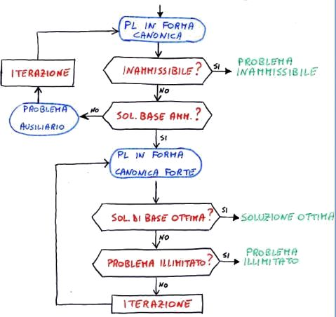
Affronteremo i vari passi via via nel corso del capitolo.
Tableau
La struttura dati che rappresenta la forma canonica su cui lavora l'algoritmo del simplesso si chiama tableau ed è una matrice.
Facciamo un esempio di derivazione di un tableau da un problema già espresso in forma canonica. In particolare le variabili di slack in base (B = {x3,x4,x5}) saranno scritte in verde, mentre quelle fuori base (N = {x1,x2}) in rosso.
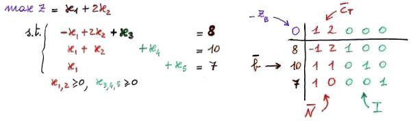
Facciamo qualche considerazione sul tableau:
- nella posizione (0,0) si mette il termine noto della funzione obiettivo. Per convenzione il problema si esprime sempre in forma di minimo, quindi se sto massimizzando devo invertire i segni (come andrà fatto in questo caso)
- la riga 0 è quella dei coefficienti di costo ridotto, ovvero i coefficienti delle x che compaiono nella funzione obiettivo. Il perché del loro nome lo capiremo poi
- sulla colonna 0 si mettono i vari termini noti
b
- in tutte le altre righe si mettono i coefficienti delle x che compaiono nei vincoli
Test di ottimalità
Guardando l'algoritmo del simplesso osserviamo che una volta posto il problema in forma canonica forte ci chiediamo se la soluzione è ottima o no. Come posso rispondere a questa domanda? Con il test di ottimalità.
Ricordiamo anzitutto che:
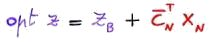
, dove i coefficienti di costo ridotto CN indicano di quanto cambierebbe la funzione obiettivo z se il valore delle variabili fuori base xN passasse da 0 a un numero positivo.
A questo punto possiamo distinguere due test di ottimalità a seconda della direzione di ottimizzazione:
- se stiamo massimizzando, allora siamo all'ottimo quando ho i coefficienti di costo ridotto minori o uguali a 0
- se stiamo minimizzando, allora siamo all'ottimo quando ho i coefficienti di costo ridotto maggiori o uguali a 0
In entrambi i casi non sarà possibile migliorare ulteriormente la soluzione z corrente, il che significa che è quella ottima.
Ci ricordiamo il discorso sulla degenerazione? Avevamo detto che era una situazione critica ma non ne avevamo spiegato bene i motivi. Ora però sappiamo che dato che a una soluzione degenere possono corrispondere tante basi diverse, le condizioni di ottimalità non valgono più, e quindi ci potremmo trovare nella situazione in cui siamo già all'ottimo ma non riusciamo ad accorgercene. In questi casi ci vorranno diverse iterazioni in più del necessario per rendersi conto che magari siamo alla soluzione ottima già da un po', ed è tutto tempo computazionale buttato alle ortiche.
Pivoting
Passiamo alla parte divertente.
Come si fa a cambiare base? Come si passa da una forma canonica all'altra?
A queste domande - peraltro equivalenti - si risponde con la tecnica del pivoting.
Facciamo un esempio commentato.
| 1
| Forma iniziale.
| 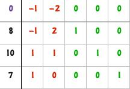
|
| 2
| Scegliere da una delle colonne fuori base un elemento positivo, che chiameremo pivot. Nel nostro caso quello sulla riga 1 e colonna 2.
Il perché deve essere positivo lo vedremo poi, per ora ci basti sapere che è un requisito per mantenere l'ammissibilità.
| 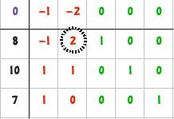
|
| 3
| Dividere la riga (r) che contiene il pivot per il valore del pivot stesso.
| 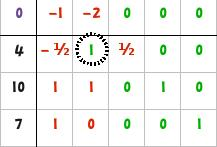
|
| 4
| Tenetevi forte: sottrarre ad ogni riga i diversa da r (quella del pivot) il valore della riga del pivot moltiplicata per l'elemento di i sulla stessa colonna del pivot.
Facciamo prima con un esempio:
riga 0: si sottrae (-2) * (riga del pivot)
riga 2: si sottrae (1) * (riga del pivot)
riga 3: si sottrae (0) * (riga del pivot)
| 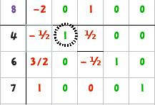
|
Come risultato avremo ancora una forma canonica, ma abbiamo fatto entrare in base la colonna del pivot e fatto uscire quella che aveva il valore 1 sulla sua riga (in corrispondenza delle variabili in base). Ovviamente non è questo l'unico risultato, ma possiamo osservare che la funzione obiettivo è migliorata: zott = - zB = -8.
Ok, funziona, ma che significato hanno questa serie di operazioni? Rivediamo lo stesso esempio in un altro modo, così da poterne osservare meglio le corrispondenze.
|
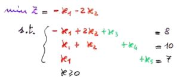
Problema in forma canonica
| ->
pivot
->
|
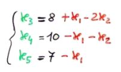
Lo stesso problema riscritto esprimendo le variabili in base in funzione di quelle non in base
|
Questo problema ha lo stesso tableau che abbiamo usato sopra come esempio. Se facciamo pivot sull'elemento in riga 1 e colonna 2, faremo entrare in base x2 e uscire x3. Dovremo quindi aggiornare le equazioni del sistema, esprimendo stavolta x2, x4 e x5 in funzione di x1 e x3. Ciò che otteniamo è riportato nella figura sotto.
|
Sistema prima del cambio basi
| ->
pivot
->
|
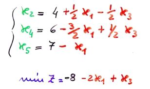
Sistema dopo il cambio basi
|
Se proviamo a fare il tableau di questo nuovo sistema otteniamo esattamente quello che prima avevamo ricavato con la tecnica del pivoting.
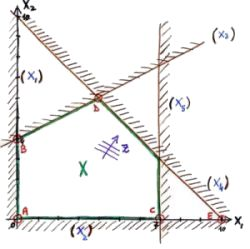
Per capire cosa succede da un punto di vista geometrico facciamo riferimento al grafico riportato a destra (che corrisponde al problema in esame).
Un iterazione di pivoting consiste nello spostarci da un vertice del poliedro (ad esempio A), che sappiamo corrispondere a una soluzione di base ammissibile, ad un altro vertice (ad esempio B).
Tutto qui? Tutto qui.
Si noti che quando diciamo che le variabili di base in A sono x3, x4 e x5, il vertice corrispondente è quello dato dall'intersezione dei vincoli attivi, e quindi x1 e x2.
Stesso ragionamento per B: le variabili di base sono x2, x4 e x5, quindi il vertice corrispondente è dato dall'intersezione di x1 e x3.
Ricapitolando, a quanto pare a seconda della scelta del pivot otteniamo una soluzione diversa, migliore o peggiore. Ma come facciamo a scegliere quello giusto? I prossimi due capitoli ci daranno una risposta.
Scelta della riga del pivot
Attraverso la scelta della riga del pivot determiniamo la variabile di base che deve uscire, quindi dobbiamo fare in modo di garantire l'ammissibilità della soluzione. Andando per tentativi provando su tutte le righe posso verificare l'ammissibilità controllando se le coordinate (termine noto riga pivot; coefficiente funzione obiettivo colonna pivot) ottenute alla fine del pivoting individuano effettivamente un vertice del poliedro o se si trovano al di fuori della regione ammissibile.
Per fortuna esiste una regolina che ci evita l'imbarazzo di andare a tentoni, e consiste nello scegliere la riga - tra tutte quelle in cui il pivot è strettamente positivo - che minimizza il rapporto tra termine noto e pivot. Seguire questo metodo ci permetterà di spostarci sulla prima soluzione di base che incontriamo nella direzione scelta, il che implica la garanzia di ammissibilità.
Scelta della colonna del pivot
Per quanto riguarda la scelta della colonna del pivot dobbiamo riprendere in considerazione il test di ottimalità, che ricordiamo ci permette di conoscere (grazie ai coefficienti di costo ridotto) di quanto varierebbe la funzione obiettivo se le variabili fuori base non valessero 0 ma un qualsiasi numero positivo. Grazie a questo test possiamo scoprire se esistono delle direzioni ammissibili di miglioramento della soluzione oppure no. In particolare, nella scelta della colonna del pivot potremo scegliere quella che ha il coefficiente di costo ridotto che fa fallire il test di ottimalità:
- valore positivo se il problema è di massimizzazione
- valore negativo se è di minimizzazione (il caso più frequente, dato che per convenzione si trasformano tutti i problemi in ottimizzazioni di questo tipo)
Nel nostro esempio (vedi figura accanto) entrambi i coefficienti di costo ridotto sono sbagliati, perché stiamo minimizzando e loro sono entrambi negativi.
Facendo riferimento all'aspetto grafico del problema, se faccio entrare in base la variabile x1 avrò uno spostamento della soluzione verso destra (verso C); mentre se faccio entrare in base x2, la soluzione si sposta verso l'alto (verso A). In entrambi i casi la situazione migliora.
Ma che fare se stiamo minimizzando ed abbiamo più di una colonna con costo ridotto negativo? Abbiamo diverse strategie:
- scegliere quella con minimo costo ridotto
- scegliere la prima da sinistra
- scegliere a caso
- utilizzare metodi di scelta come quello di Bland
- scegliere la colonna che produce il massimo miglioramento della soluzione
Ora sappiamo tutto quello che ci serve per individuare riga e colonna del pivot. Abbiamo inoltre capito che la scelta della riga garantisce l'ammissibilità della soluzione, mentre quella della colonna l'ottimalità.
Test di illimitatezza
Concludiamo i nostri approfondimenti sulle varie fasi dell'algoritmo del simplesso andando a vedere il test di illimitatezza, ovvero il test grazie al quale l'algoritmo capisce che non esiste una soluzione ottima perché il problema è illimitato.
Il test di illimitatezza è molto semplice: se le colonne del tableau che hanno costo ridotto negativo (quelle che fanno fallire il test di ottimalità) non hanno nemmeno un elemento positivo, allora il problema è illimitato.
Quando l'algoritmo riconosce questa situazione si blocca ed esce dal processo risolutivo.
Torna alla pagina di Ricerca Operativa